전기철도기사 (2014-08-17 기출문제)
1과목: 전기철도공학
1. 교류급전회로에서 고정점 표정장치의 방식 중 At급전회로에 사용하는 검출 방식으로 맞는 것은?
- 리액턴스 검출방식
- AT 흡상 전류비 방식
- 선로 임피던스 검출방식
- 선로저항 검출방식
(정답률: 알수없음)

2. 전차선의 억제저항, 전차선 편위의 변화량, 중추의 동작범위 및 밸런스의 효율 등에 의해서 활차식 자동 장력조정장치(WTB)의 조정거리(L)를 구하는 식은? (단, 조정거리는 직선 개수의 경우이며 C는 전차선의 선팽창계수, △t는 표준온도에 대한 온도변화, X는 전차선의 신장길이이다.)
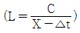
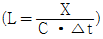
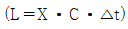
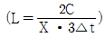
(정답률: 알수없음)
3. 전차선의 파동 전파속도 C를 나타내는 식은? (단, T : 전차선장력(N) L : 전차선의 단위질량(kg/m))
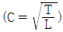
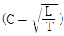
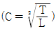
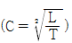
(정답률: 100%)
4. 고속철도에서 커티너리(Catenary)가선방식의 지지점에서 전차선의 표준가고(mm)는? (단, 속도등급은 300, 350킬로급)
- 800
- 900
- 1400
- 2000
(정답률: 알수없음)
5. 전주 경간을 S, 하중을 W, 수평장력을 T라 할 때 두 지점간 전선의 이도(dip)를 구하는 식은?
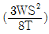
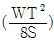
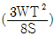
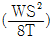
(정답률: 알수없음)
6. 그림과 같은 전차선의 조가방식은?
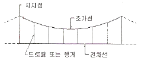
- 직접 조가식
- 콤파운드 커티너리식
- 심플 커티너리식
- 변Y형 심플 커티너리식
(정답률: 알수없음)
7. 차체 경사를 레일면에서 585mm점을 중심으로 해서 좌우 610mm의 수평점에서 상하 최대 22mm라 할 때 차제 동요에 의한 팬터그래프의 경사각은 약 몇 [°]인가?
- 1°
- 2°
- 3°
- 4°
(정답률: 알수없음)
8. 장력조정장치 X의 값을 구하는 식은? (단, L : 전선의 길이[m], T : 현재온도[℃], A : +60℃에서의 X값(0.4m))
- X=[(17×10-6×L)×(60℃-T℃)]+A
- X=[(17×10-6+L)×(60℃+T℃)]+A
- X=[(5×10-6×L)×(60℃-T℃)]
- X=[(5×10-6+L)×(60℃+T℃)]
(정답률: 알수없음)
9. 교류급전방식에서 위상이 90°다른 M상과 T상이 혼촉한 경우의 고장 전류식은? (단, (VMT : MT 혼촉전압, IMT : MT혼촉전류, ZAT : AT누설 임피던스, Z0 : 전원 임피던스, ZM, ZT : 변압기 임피던스)
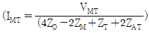
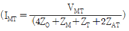
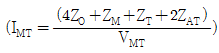
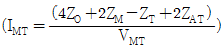
(정답률: 알수없음)
10. 전기철도 교류 R-bar 강체 전차선로에서 기본구성 요소로 가장 거리가 먼 것은?
- 롱이어
- 전차선
- 연결금구
- 리지드 바
(정답률: 알수없음)
11. 전차선로에서 양단의 가고가 같은 경우 경간 중앙에서의 이도가 0.436[m]이고, 드로퍼 위치의 이도가 0.352[m]일 때 드로퍼의 길이는 몇 [m]인가? (단, 기고는 (960[mm]이다.)
- 0.172
- 0.436
- 0.876
- 1.748
(정답률: 64%)
12. 전차선로에 설치하는 섬락보호 방식으로 거리가 먼 것은?
- 이중 절연방식
- FW 절연방식
- 섬락보호 지선방식
- 단독 접지방식
(정답률: 알수없음)
13. 전차선로의 가선방식 중 상호 절연된 정·부 2조의 가공접촉전선을 가설하고 한 쪽의 전선으로부터 전기차에 전기를 공급하여 다른 쪽의 전선을 통하여 변전소로 돌려보내는 방식은?
- 가공단선식
- 가공복선식
- 강체식
- 제3궤조식
(정답률: 알수없음)
14. 일반개소의 인류장치에서 전차선과 조가선의 최대 인류구간은 얼마로 한정 하여야 하는가?
- 800[m]
- 1000[m]
- 1250[m]
- 1500[m]
(정답률: 60%)
15. 인류구간의 양쪽에 활차식 자동장력 조정장치를 사용한 경우 흐름방지장치 시설에 대한 설명으로 거리가 먼 것은?
- 흐름장지장치의 인류를 하기 전에 지선을 먼저 설치하여야 한다.
- 주축전주의 브래킷은 선로에 대해 수평이 되게 설치하여야 한다.
- 흐름방지장치의 양 인류전선은 해당 선로의 조가선과 동일한 전선으로 한다.
- 강체 가선구간에서는 인류구간(섹션) 중앙점에 흐름방지장치를 시설한다.
(정답률: 73%)
16. 정상전류가 급감하는 경우에 역방향 고속도차단기가 트립동작하는 것은?
- 선택특성
- 트립자유
- 자기특성
- 불요동작
(정답률: 알수없음)
17. 철도횡단 궤도면상 가공 급전선의 높이는 얼마이상으로 하는가?
- 3.5[m]이상
- 4.5[m]이상
- 5.5[m]이상
- 6.5[m]이상
(정답률: 90%)
18. 전식방지 대책을 위한 배류법에 해당하지 않는 것은?
- 작점배류법
- 선택배류법
- 순환배류법
- 강제배류법
(정답률: 알수없음)
19. 고속철도 가동브래킷용 장간애자는 일반개소에서 최소 누설거리 몇 [mm]의 유리애자를 사용하는가?
- 800
- 1000
- 1200
- 1400
(정답률: 알수없음)
20. 직류 편송 급전회로의 고장전류는 약 [A]인가? (단, 급전회로정수 0.038[Ω/km], 급전거리 5km, 고장점저항 0.1[Ω], 변전소 내부저항 0.03[Ω], Arc 전압 300[V], 무부하 급전전압 1620[V]이다.)
- 3142
- 4125
- 5062
- 6000
(정답률: 알수없음)
2과목: 전기철도 구조물공학
21. 어떤 재료에 있어 하중으로 인한 체적변화가 없다고 할 때, 푸아송비의 최대값은?
- 0.1
- 0.2
- 0.5
- 1.0
(정답률: 알수없음)
22. 전주의 경간이 40m, 전선의 장력이 1000kgf, 곡선 반지름이 500m일 때, 곡선로의 수평장력 [kgf]은?
- 80
- 90
- 100
- 110
(정답률: 알수없음)
23. 지름 4[cm]의 환봉이 5000[kg]의 인장하중을 받을 때의 응력은 약 몇 [kgf/cm2]인가?
- 198
- 398
- 795
- 1591
(정답률: 알수없음)
24. 구조물이 핀(pin)으로 연결되어 이동은 할 수 없고, 회전만 가능한 한지지점의 반력수는?
- 1개
- 2개
- 3개
- 4개
(정답률: 90%)
25. 전파속도 300[m/μs],뢰의 파두장 3[μs]일 때 피뢰기의 직선적 유효 보호범위 [m]는?
- 100
- 300
- 450
- 500
(정답률: 알수없음)
26. 하중의 일부를 측면 흙의 압력으로 지지하도록 한 것으로 빔을 지지하는 철주 및 인류주에 지선을 설치하지 않기 위하여 사용하는 기초는?
- 기둥형 기초
- 우울동형 기초
- 중력형 블록기초
- 푸싱 기초
(정답률: 알수없음)
27. 지선은 전주에 작용하는 수평하중의 몇 [%]를 부담하는가?
- 85[%]
- 90[%]
- 95[%]
- 100[%]
(정답률: 알수없음)
28. 지표면에서 높이가 12m인 단독 지지주에 30kgf/m의 수평분포하중이 작용하는 경우 지표로부터 4m 지지점에서의 전단력[kgf]은?
- 180
- 220
- 240
- 320
(정답률: 73%)
29. 전차선로용 강 구조물 중 보통 압축재의 세장비(λ)는 얼마 이하로 제한하고 있는가?
- 150
- 190
- 220
- 270
(정답률: 알수없음)
30. 다음 구조물 중 2차원 구조물로 맞는 것은?
- 패널(panel)
- 트러스(truss)
- 라멘(rahmen)
- 봉(rod)
(정답률: 알수없음)
31. 애자연결길이 360mm, 진동각 60°, 전기적 절연 최소 이격거리 250mm, 여유거리 15mm라 할 때 지주로부터 이격거리는 약 몇 [mm]인가?
- 625
- 698
- 577
- 558
(정답률: 알수없음)
32. 급전선의 최대장력은 1,970kgf이고, 지선의 전주와의 설치 각도를 45도라 할 때, 이 지선이 받는 최대장력은 약 몇 [kgf]인가? (단, 지선의 안전율은 2.5이다.)(오류 신고가 접수된 문제입니다. 반드시 정답과 해설을 확인하시기 바랍니다.)
- 2785
- 5980
- 6965
- 7955
(정답률: 90%)
33. 단독지지주의 높이가 7.8m이고 전차선의 수평집중하중이 10kN이다. 이 경우 지면과의 경계점에서의 전단력 [kN]은?
- 5
- 10
- 39
- 78
(정답률: 알수없음)
34. 크기가 같고 방향이 반대인 나란한 두 힘은?
- 우력
- 비틀림
- 반력
- 작용력
(정답률: 80%)
35. 그림과 같은 보의 단부와 중앙부에서의 횡모멘트 비(단부:중앙부)는?
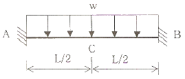
- 1:1
- 1:2
- 2:1
- 1:3
(정답률: 알수없음)
36. 다음 라멘주조물의 부정정차수는? (단, 중앙의 절점은 힌지이다.)
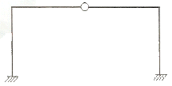
- 1차부정정
- 2차부정정
- 3차부정정
- 4차부정정
(정답률: 알수없음)
37. 단면적 7cm2, 길이 2m의 봉강에 인장력이 작용하여 14mm가 늘어났다면, 이때의 인장력[kgf]은? (단, 영계수 = 2.0×105kg/cm2)
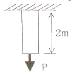
- 8500
- 9800
- 1⑤00
- 11800
(정답률: 알수없음)
38. 길이 6m인 단독주가 있다. 단면의 회전반지름이 20cm일 때 이 단독주의 세장비는?(오류 신고가 접수된 문제입니다. 반드시 정답과 해설을 확인하시기 바랍니다.)
- 30
- 60
- 90
- 120
(정답률: 알수없음)
39. 전주의 근원부근에 근가를 시설해서 활모양으로 취부하는 특수한 지선을 말하며 지선을 취부할 수 없는 경우 등특별한 경우에만 사용되는 지선은?
- V혐 지선
- 궁형 지선
- 단지선
- 2단 지선
(정답률: 알수없음)
40. 기초의 면적이 4m2인 사각형 단면의 기초가 있다. 기초 지반의 허용지지력이 200kN/m2이라고 할 때 기초가 받을 수 있는 최대 허용수직응력 [kN]은?
- 400
- 600
- 800
- 1000
(정답률: 알수없음)
3과목: 전기자기학
41. 유전율ε, 투자율μ인 매질 내에서 전자파의 속도(m/s)는?
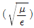
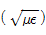
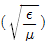
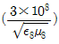
(정답률: 알수없음)
42. 두 개의 소자석 A, B의 세기가 서로 같고 길이의 비는 1:2이다. 그림과 같이 두 자석을 일직선상에 놓고 그 사이에 A, B의 중심으로부터 r1, r2 거리에 있는 점 P에 작은 자침을 놓았을 때 자침이 지석의 영향을 받지 않았다고 한다. r1: r2는 얼마인가?
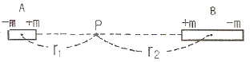
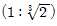
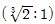
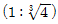
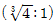
(정답률: 37%)
43. 전자파에서 전계 E와 자계 H의 비(E/H)는? (단, μs, εs는 각각 공간의 비투자율, 비유전율이다.)
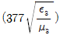
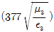
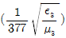
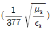
(정답률: 46%)
44. 전속밀도 D, 전계의 세기 E, 분극의 세기 P 사이의 관계식은?
- P=D+ε0E
- P=D-ε0E
- P=D(1-ε0)E
- P=ε0(D-E)
(정답률: 알수없음)
45. 와전류에 대한 설명으로 틀린 것은?
- 도체 내부를 통하는 자속이 없으면 와전류가 생기지 않는다.
- 도체내부를 통하는 자속이 변화하지 않아도 전류의 회전이 발생하여 전류밀도가 균일하지 않다.
- 패러데이의 전자유도 법칙에 의해 철심이 교번자속을 통할 때 줄(Joule)열 손실이 크다.
- 교류기기는 와전류가 매우 크기 때문에 저감대책으로 얇은 철판(규소강판)을 겹쳐서 사용한다.
(정답률: 알수없음)
46. 유전체 내의 전속밀도를 정하는 원천은?
- 유전체의 유전율이다.
- 분극 전하만이다.
- 진전하만이다.
- 진전하와 분극 전하이다.
(정답률: 40%)
47. 진공 중에서 점(0, 1) m 되는 곳에 -2×10-9C 점전하가 있을 때 점(2, 0) m에 있는 1C에 작용하는 힘(N)는?
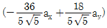
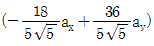
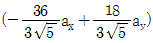
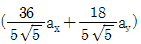
(정답률: 알수없음)
48. 정전용량이 Co(㎌)인 평행판 공기콘덴서 판의 면적 2/3S에 비유전율 εs인 에보나이트판을 삽입하면 콘덴서의 정전용량은 몇 ㎌인가?
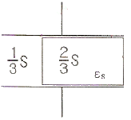
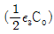
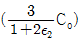
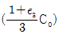
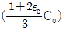
(정답률: 알수없음)
49. 공기중 방사성 원소 플루토늄(Pu)에서 나오는 한 개의 α입자가 정지하기까지 1.5×105쌍의 정·부 이온을 만든다. 전리상자에 애초 4×1010개의 α선이 들어올 때, 이 전리상자에 흐르는 포화전류의 크기는 몇 A인가? (단, 이온 한 개의 전하는1.6×10-19C이다.)
- 4.8×10-3
- 4.8×10-4
- 9.6×10-3
- 9.6×10-4
(정답률: 알수없음)
50. 히스테리시스 곡선의 기울기는 다음의 어떤 값에 해당하는가?
- 투자율
- 유전율
- 자화율
- 감자율
(정답률: 알수없음)
51. 체적 전하밀도 ρ(C/m3)로 V(m3)의 체적에 걸쳐서 분포되어 있는 전하분포에 의한 전위를 구하는 식은? (단, r은 중심으로부터의 거리이다.)
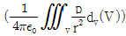
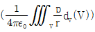
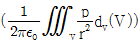
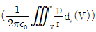
(정답률: 알수없음)
52. 반지름 a(m)인 원통 도체에 전류 I(A)가 균일하게 분포되어 흐르고 있을 때의 도체 내부의 자계의 세기는 몇 A/m인가? (단, 중심으로부터의 거리는 r(m)라 한다.)
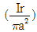
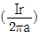
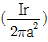
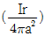
(정답률: 알수없음)
53. 한변의 길이가 ℓ(m)인 정육면체 회로에 I(A)가 흐르고 있을 때 그 정육면체 중심의 자계의 세기는 몇 A/m인가?
(정답률: 알수없음)
54. 자기 인덕터스 L1, L2와 상호 인덕턴스 M일 때, 일반적인 자기 결합 상태에서 결합계수 k는?
- k<0
- 0<k<1
- k>1
- k=0
(정답률: 알수없음)
55. 대전된 도체의 표면 전하밀도는 도체 표면의 모양에 따라 어떻게 되는가?
- 곡률 반지름이 크면 커진다.
- 곡률 반지름이 크면 작아진다.
- 표면 모양에 관계없다.
- 평면일 때 가장 크다.
(정답률: 알수없음)
56. 반지름 a(m)의 반구형 도체를 대지표면에 그림과 같이 묻었을 때 접지저항 R(Ω)은? (단, ρ(Ω·m)는 대지의 고유저항이다.)
(정답률: 알수없음)
57. 비투자율 μs는 역자성체에서 다음 중 어느 값을 갖는가?
- μs=1
- μs<1
- μs>1
- μs=0
(정답률: 70%)
58. 단면적 S, 평균 반지름 r, 권선수 N인 환상슬레노이드에 누설자속이 없는 경우, 자기인덕턴스의 크기는?
- 권선수의 제곱에 비례하고 단면적에 반비례한다.
- 권선수 및 단면적에 비례한다.
- 권선수의 제곱 및 단면적에 비례한다.
- 권선수의 제곱 및 평균 반지름에 비례한다.
(정답률: 알수없음)
59. 내압이 1kW이고 용량이 각각 0.01㎌, 0.02㎌, 0.04㎌인 콘덴서를 직렬로 연결했을 때 전체 콘덴서의 내압은 몇 V인가?
- 1750
- 2000
- 3500
- 4000
(정답률: 알수없음)
60. 정전계에 대한 설명으로 옳은 것은?
- 전계에너지가 항상 ∞인 전기장을 의미한다.
- 전계에너지가 항상 0인 전기장을 의미한다.
- 전계에너지가 최소로 되는 전하분포의 전계를 의미한다.
- 전계에너지가 최대로 되는 전하분포의 전계를 의미한다.
(정답률: 50%)
4과목: 전력공학
61. 부하설비용량 600kW, 부동률 1.2, 수용률 60%일 때의 합성최대수용전력은 몇 kW인가?
- 240
- 300
- 432
- 833
(정답률: 알수없음)
62. 차단기에서 고속도 재폐로의 목적은?
- 안정도 향상
- 발전기 보호
- 변압기 보호
- 고장전류 억제
(정답률: 알수없음)
63. 송전선로에서 지락보호계전기의 동작이 가장 확실한 접지 방식은?
- 직점접지식
- 저항접지식
- 소호리액터접지식
- 리액터접지식
(정답률: 50%)
64. 발전기나 주변압기의 내부고장에 대한 보호용으로 가장 적합한 것은?
- 온도계전기
- 과전류계전기
- 비율차등계전기
- 과전압계전기
(정답률: 알수없음)
65. 유도장해를 경감시키기 위한 전력선측의 대책으로 틀린 것은?
- 고저항 접지방식을 채용한다.
- 송전선과 통신선 사이에 차폐선을 설치한다.
- 고속도 차단방식을 채택한다.
- 중성점 전압을 상승시킨다.
(정답률: 알수없음)
66. 3상 배전선로의 말단에 지상역률 80%, 160kW의 평형 3상 부하가 있다. 부하점에 전력용 콘덱서를 접속하여 선로 손실을 최소가 되게 하려면 전력용 콘덱서의 필요한 용량(kVA)은? (단, 부하단 전압은 변하지 않는 것으로 한다.)
- 100
- 120
- 160
- 200
(정답률: 알수없음)
67. 송전계통의 안정도 증진방법으로 틀린 것은?
- 직렬리액턴스를 작게 한다.
- 중간 조상방식을 채용한다.
- 계통을 연계한다.
- 원동기의 조속기 작동을 느리게 한다.
(정답률: 알수없음)
68. 단로기에 대한 설명으로 틀린 것은?
- 소호장치가 있어 아크를 소멸시킨다.
- 무부하 및 여자전류의 개폐에 사용된다.
- 배전용 단로기는 보통 디스컨넥팅바로 개폐한다.
- 회로의 분리 또는 계통의 접속 변경시 사용한다.
(정답률: 알수없음)
69. 3상 3선식 송전선로에서 각 선의 대지정전용량이 0.5096㎌ 이고, 선간정전용량이 0.1295㎌ 일 때, 1선의 작용정전용량은 약 몇 ㎌인가?
- 0.6
- 0.9
- 1.2
- 1.8
(정답률: 알수없음)
70. 송전선에의 뇌격에 대한 차폐 등으로 가선하는 가공지선에 대한 설명 중 옳은 것은?
- 차폐각은 보통 15∼30° 정도로 하고 있다.
- 차폐각이 클수록 벼락에 대한 차폐효과가 크다.
- 가공지선을 2선으로 하면 차폐각이 적어진다.
- 가공지선으로는 연동선을 주로 사용한다.
(정답률: 알수없음)
71. 전선의 지지점의 높이가 15m, 이도가 2.7m, 경간이 300m일 때 전선의 지표상으로부터의 평균높이(m)?
- 14.2
- 13.2
- 12.2
- 11.2
(정답률: 알수없음)
72. 화력발전소에서 매일 최대출력 100000kW, 부하율 90%로 60일간 연속 운전할 때 필요한 석탄량은 약 몇 t인가? (단, 사이클 효율은 40%, 보일러 효율은 85%, 발전기 효율은 98%로 하고 석탄의 발열량은 5500kcal/kg이라 한다.)
- 60820
- 61820
- 62820
- 63820
(정답률: 알수없음)
73. 중거리 송전선로의 T형 회로에서 송전단 전류 Is는? (단, Z, Y는 선로의 직렬 임피던스와 어드미턴스이고, Er은 수전단 전압, Ir은 수전단 전류이다.)
(정답률: 알수없음)
74. 저압 단상 3선식 배전 방식의 가장 큰 단점은?
- 절연이 곤란하다.
- 전압의 불균형이 생기기 쉽다.
- 설비 이용률이 나쁘다.
- 2종류위 전압을 얻을 수 있다.
(정답률: 알수없음)
75. 수조에 대한 설명 중 틀린 것은?
- 수로 내의 수위의 이상 상승을 방지한다.
- 수로식 발전소의 수로 처음 부분과 수압관 아래 부분에 설치한다.
- 수로에서 유입하는 물속의 토사를 침전시켜서 배사문으로 배사하고 부유물을 제거한다.
- 상수조는 최대사용수량의 1∼2분 정도의 조정용량을 가질 필요가 있다.
(정답률: 알수없음)
76. 저압 네트워크 배전방식의 장점이 아닌 것은?
- 인축의 접지사고가 적어진다.
- 부하 증가시 적응성이 양호하다.
- 무정전 공급이 가능하다.
- 전압변동이 적다.
(정답률: 알수없음)
77. 가공전선로의 경간 200m, 전선의 자체무게 2kg/m, 인장하중 5000kg, 안전율 2인 경우, 전선의 이도는 몇 m인가?
- 2
- 4
- 6
- 8
(정답률: 알수없음)
78. 송전선로의 송전특성이 아닌 것은?
- 단거리 송전선로에서는 누설 컨덕턴스, 정전용량을 무시해도 된다.
- 중거리 송전선로는 T회로, π회로 해석을 사용한다.
- 100km가 넘는 송전선로는 근사계산식을 사용한다.
- 장거리 송전선로의 해석은 특성임피던스와 전파정수를 사용한다.
(정답률: 알수없음)
79. 송전선로에 복도체를 사용하는 주된 목적은?
- 코로나 발생을 감소시키기 위하여
- 인덕턴스를 증가시키기 위하여
- 정전용량을 감소시키기 위하여
- 전선 표면의 전위경도를 증가시키기 위하여
(정답률: 알수없음)
80. 1대의 주상변압기에 부하1과 부하2가 병렬로 접속되어 있을 경우 주상변압기에 걸리는 피상전력(kVA)은?
(정답률: 알수없음)